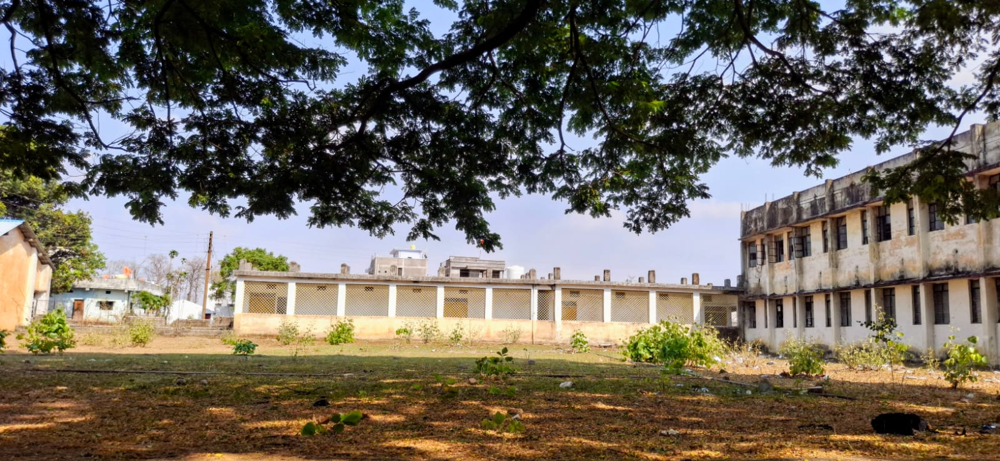
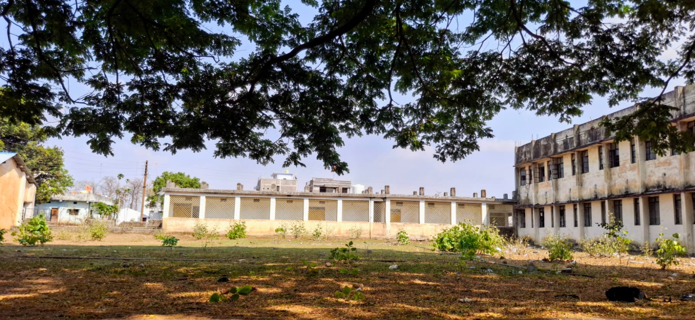
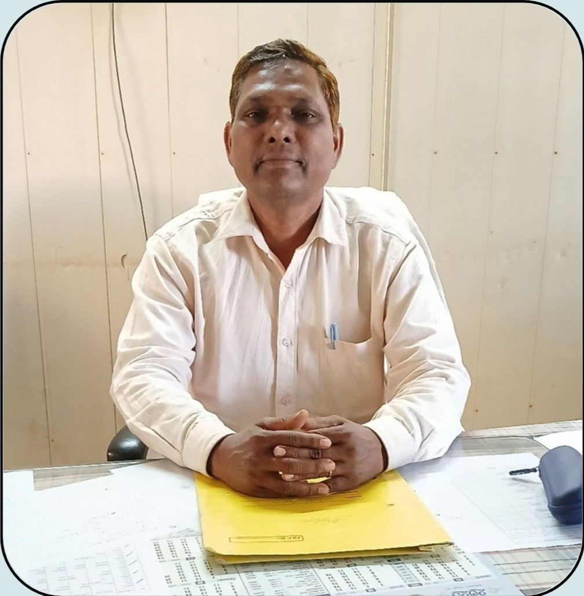

About Our Institutes:
Government Polytechnic College Khirsadoh is dedicated to providing quality technical education and skill development to empower students for a successful future in engineering and technology.
Established in 1956, Government Polytechnic College Khirsadoh has a proud legacy of delivering quality technical education. With a commitment to progress, the college continues to empower generations of students with practical knowledge and industry-ready skills.

 

Our Mission-
Principal’s Message-
We are proud to be shaping the future of thousands of students with dedication and innovation. Welcome to a journey of learning and excellence.
At GPC Khirsadoh, we believe education is not just about earning a diploma, but about building character, confidence, and a commitment to lifelong learning. I invite you to explore our campus, engage with our vibrant academic community, and be a part of our continuing journey toward excellence.
 – Mr. Hari Das Patil Principal, Government Polytechnic College Khirsadoh